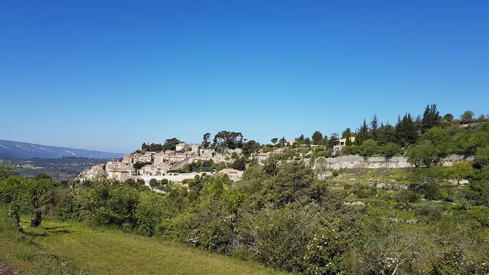
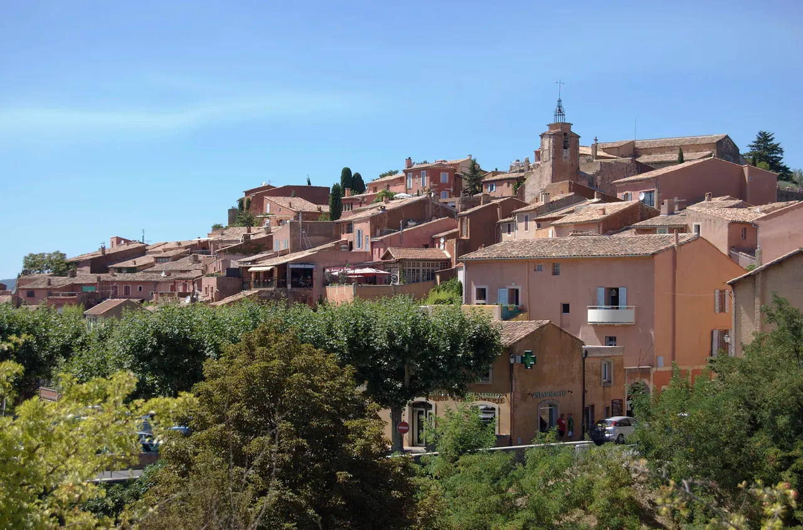

{kind=link}
.jpg){kind=link}

Coustellet 생산자 시장
뤼베롱 현지 농부들이 직접 재배하고 만든 신선 농산물과 특산품만 판매하는 프랑스 공인 정통 생산자 직거래 일요 시장(Marché Paysan). 뤼베롱 농가 체류의 최고의 식재료 보급 거점.

| 항목 | 평가 |
|---|---|
| 여행 적합도 | ★★★★★ Jason·Julia의 생활형 여행에 최적화 |
| 예산 체감 | 숙박비 높음 |
| 일정 강도 | 느림 |
| 예약 핵심 | 농가 주소·진입·체크인 P0 |
| 우천 전환 | 농가 독서·실내 스케치·가까운 마을 카페 |
여행의 역할: 엑상프로방스의 도시생활과 카시스·마르세유 당일치기를 마친 뒤, 뤼베롱에서는 속도를 낮춘다. 이 구간의 목적은 유명마을을 가능한 많이 수집하는 것이 아니라 농가 숙박 자체, 마을의 재료와 지형, 시장에서 산 식재료, 스케치·산책·테라스 식사를 하나의 생활 경험으로 만드는 것이다.
최신 확정사항: 프로방스는 엑상 4박 + 뤼베롱 농가 3박 + 아비뇽 4박으로 운영하며, 뤼베롱 농가 숙박은 옵션이 아니라 확정 일정이다. 수영장 유무·가열·길이는 숙소 평가에서 완전히 제외하고, 중앙입지·농가환경·전용주방·세탁·주차·포장도로·생활편의·3박 총액을 우선한다. 기존 4박 예약표기는 변경 완료가 아니라 예약 변경 필요 상태다.
사용자 선호 반영: 실내 전시보다 Lourmarin, Roussillon, Goult 또는 Bonnieux, Gordes, Ménerbes 또는 Oppède의 서로 다른 성격을 비교한다. L’Isle-sur-la-Sorgue 목요시장은 새 날짜와 맞지 않아 기본 일정에서 제외했다.
시장에서 산 재료로 한 끼 완성 가장 중요한 체험이다. 고급 레스토랑보다 시장에서 산 치즈·토마토·빵·과일을 농가 테라스에서 먹는 경험이 이 구간의 정체성에 더 가깝다.
pétanque 한 게임 숙소에 코트가 있으면 규칙을 완벽히 알지 못해도 30분 즐긴다. 현지 생활의 리듬을 체험하는 간단한 방식이다.
포도밭·올리브밭 가장자리 산책 - 사유지 경계를 지킨다 - 수확 작업차량을 방해하지 않는다 - 일몰 전 30–45분이 좋다

| 항목 | 이유 |
|---|---|
| 마르세유·아비뇽 당일치기 | 마르세유는 Aix에서, 아비뇽은 9/16부터 4박 한다 |
| 베르동 협곡 | 왕복만 하루. 이 구간 리듬과 안 맞는다 |
| 라벤더 밭 투어 | 9월에는 없다 |
| 마을 5개 이상 하루 | 운전과 주차만 하다 끝난다 |
| 장소·경험 | 등급 | 이유 |
|---|---|---|
| 농가생활·테라스 식사 | 필수 | 이 구간 자체의 목적 |
| Coustellet 생산자시장 | 필수 | 체크인 당일 식재료와 생활리듬 확보 |
| Roussillon·오커길 | 필수 | 다른 마을과 완전히 다른 지질·색채 경험 |
| Gordes 시장·마을 | 필수 | 뤼베롱 상징성과 화요일 일정 결합 |
| Lourmarin | 우선 추천 | 이동일에 맞고 스케치 행사와 결합 |
| Goult | 우선 추천 | 관광객이 덜한 생활마을·스케치 |
| Ménerbes | 우선 추천 | 포도밭·능선·와인·저녁 선택 |
| L’Isle 목요시장 | 대체 | 새 체크아웃 9/16과 맞지 않아 기본 일정 제외 |
| Village des Bories | 선택 | 열린 농업유산, 30–45분이면 충분 |
| Sénanque 내부 | 선택 | 건축·정적은 좋으나 농가·마을보다 후순위 |
| Oppède-le-Vieux | 선택 | 독특하지만 오르막과 돌길 |
| Bonnieux | 선택 | 전망·식당 우수, Goult와 교환 |
| Lacoste | 선택 | 성·예술마을, 일정이 과밀해지기 쉬움 |
| Fontaine-de-Vaucluse | 대체 | 이동일 자연경관, 수량·혼잡 변수 |
| 모든 유명마을 순회 | 비추천 | 주차·중복·피로가 농가체험을 약화 |
| Apt 대형시장 | 이번 체류 불가 | 토요일 시장으로 날짜 불일치 |
9/13 Aix → Lourmarin의 여행스케치 행사 → Coustellet 생산자시장 → 농가 체크인
↓
9/14 Roussillon 오커길 → 마을 → Goult 또는 Bonnieux → 농가 저녁
↓
9/15 Gordes·Village des Bories → Ménerbes 또는 Oppède 선택 → 농가 마지막 저녁
↓
9/16 느린 농가 아침 → 체크아웃 → Avignon 체크인·가벼운 성벽 산책
| 날짜 | 요일 | 테마 | 기본 동선 | 피로도 |
|---|---|---|---|---|
| 9/13 | 일 | 엑상에서 농가로, 스케치와 시장 | Aix → Lourmarin → Coustellet → 농가 | 3/5 |
| 9/14 | 월 | 오커색과 생활마을 | 농가 → Roussillon → Goult/Bonnieux → 농가 | 3/5 |
| 9/15 | 화 | Gordes와 돌의 문화 | 농가 → Gordes → Bories → Ménerbes/Oppède 선택 → 농가 | 3/5 |
| 9/16 | 수 | 농가 체크아웃과 아비뇽 이동 | 농가 → Avignon 숙소·주차 → 가벼운 산책 | 3/5 |
| Day | 날짜 | 점심 | 저녁 |
|---|---|---|---|
| 16 | 9/13 일 | 뤼르마랭 또는 이동 중 | 농가 — 쿠스텔레 장본 것으로 |
| 17 | 9/14 월 | 루시용 또는 고울트 | 농가 |
| 18 | 9/15 화 | 고르드 시장 조달 | 농가 또는 식당 한 번 |
| 19 | 9/16 수 | 농가 테라스 | 농가 |
| 선택 | 9/17 목 | 리슬 시장 조달 | 기본 일정 아님 |
식당은 3박 중 한 번이면 충분하다. 이 구간의 목적이 농가 생활이다.
뤼베롱 현지 농부들이 직접 재배하고 만든 신선 농산물과 특산품만 판매하는 프랑스 공인 정통 생산자 직거래 일요 시장(Marché Paysan). 뤼베롱 농가 체류의 최고의 식재료 보급 거점.

보클뤼즈 고원 가장자리 백색 석회암 절벽 위에 층층이 솟아오른 뤼베롱 최고의 요새 마을. 마을 진입로에서 마주하는 압도적인 파노라마 전경과 11세기 중세 르네상스 성채.

알베르 카뮈가 영면한 뤼베롱 남부의 평탄하고 세련된 예술 마을. 프로방스 최초의 르네상스 성(Château de Lourmarin), 플라타너스 그늘 아래 카페 테라스, 로즈마리에 덮인 소박한 카뮈의 묘소.

17가지 타오르는 황토빛(Ochre) 절벽과 소나무 숲이 어우러진 뤼베롱에서 가장 이색적인 붉은 마을. 1억 년 지질학의 기적 '오커 트레일(Sentier des Ocres)'과 파스텔톤 가옥 골목.

1148년 깊은 협곡 속에 세워진 12세기 시토회(Cistercian) 로마네스크 수도원. 일체의 장식을 배제한 절대적 청빈의 중세 석조 건축과 현재도 이어지는 수도사들의 침묵 기도.

뤼베롱 산맥 북사면에 층층이 솟아오른 가장 낙차가 큰 계단식 언덕 마을. 해발 425m 옛 성당(Vieille Église) 정상 테라스에서 맞은편 라코스트(Lacoste) 성채와 계곡 전체를 굽어보는 압도적 파노라마.

대형 관광버스가 닿지 않아 뤼베롱에서 가장 고요하고 평화로운 '숨겨진 보석' 마을. 언덕 정상의 17세기 예루살렘 풍차(Moulin de Jérusalem)와 현지인들의 정겨운 일상이 살아있는 골목길.

에메랄드빛 소르그(Sorgue) 강이 섬처럼 감싸 흐르는 '프로방스의 베네치아'. 이끼 낀 거대한 목조 물레바퀴(Roues à aubes), 300여 개 앤틱 상점이 밀집한 유럽 3대 골동품 도시이자 시인 르네 샤르의 고향.

피터 메일의 소설 『프로방스에서의 1년』의 무대이자 피카소의 뮤즈 도라 마르가 살았던 길고 좁은 능선(Ridge) 위의 성채 마을. 뤼베롱 와인과 트러플의 중심지이자 고즈넉한 예술 마을.

19세기 주민들이 떠난 뒤 시간 속에 멈춰버린 뤼베롱의 신비로운 옛 중세 요새 마을. 숲과 덩굴에 뒤덮인 12세기 성채 폐허와 복원된 노트르담 달리동(Notre-Dame-d'Alidon) 성당.

시멘트나 모르타르 없이 납작한 석회암 조각만을 층층이 쌓아 올린 20여 채의 건식 석조(Dry-stone) 원추형 오두막 군락. 프로방스 농민들의 지혜가 담긴 야외 민속 건축 박물관.
농가에 주방이 있다. 그리고 일요일·화요일·목요일에 시장이 선다.
식당 목록보다 장보기 목록이 중요한 유일한 구간이다.
| 품목 | 비고 |
|---|---|
| 포도 | 수확기. 시장에서 가장 좋은 것 |
| 무화과 | 제철. 하루 안에 먹는다 |
| 멜론 | 카바용 산지가 인근 |
| 토마토 | 아직 좋다 |
| 염소치즈(chèvre) | 숙성도별로 조금씩 |
| 올리브 | 종류별 100g |
| 타프나드·아파나드 | 아침용 |
| 소시지(saucisson) | 보관이 쉽다 |
| 빵 | 당일 소비량만 |
| 로제 또는 뤼베롱 AOC | 저녁용 |
피할 구매 — 라벤더 제품(9월엔 전년도 재고), 부피 큰 도자기, 유리병 오일. 이후 23일을 더 이동한다.
| 시장 | 요일 | 성격 |
|---|---|---|
| Coustellet | 일 (4–12월) | 생산자 직판. 농가 첫 장보기 |
| Gordes | 화 | 관광 비중 높음. 붐빔 |
| L'Isle-sur-la-Sorgue | 목 | 식료품 시장. 골동품은 일요일 |
첫 장보기는 쿠스텔레에서 한다. 생산자가 직접 파는 곳이고, 농가 체크인 당일이라 냉장고가 비어 있다. 고르드는 사기보다 보는 시장에 가깝다.
| 이름 | 정체 |
|---|---|
| Tapenade | 올리브·케이퍼·안초비 페이스트 |
| Ratatouille | 가지·호박·피망·토마토 |
| Daube provençale | 와인에 오래 익힌 소고기 |
| Chèvre | 프로방스 염소치즈. 신선한 것부터 단단한 것까지 |
| Melon de Cavaillon | 인근 카바용 산 멜론 |
| Herbes de Provence | 타임·로즈메리·세이버리 등 혼합 |
아파나드(anchoïade)와 타프나드의 차이 — 둘 다 검은 페이스트로 보이지만 아파나드는 안초비 중심, 타프나드는 올리브 중심이다 (교차 확인 권장).
뤼베롱은 AOC 산지다. 다만 이 구간은 매일 운전한다.
와인 시음은 한 명만, 또는 무알코올 방식으로 한다.
| 방식 | 내용 |
|---|---|
| 한 명만 | 운전자는 마시지 않는다. 역할을 미리 정한다 |
| 저녁 농가 | 가장 안전하다. 운전이 끝난 뒤 |
| 시음장 | 뱉는 통(crachoir)을 쓴다. 삼키지 않아도 결례가 아니다 |
프랑스 음주운전 기준은 한국보다 엄격하지 않지만 렌터카 보험은 별개다. 사고 시 알코올이 검출되면 보장이 무효가 될 수 있다.
| 시장 | 운영 | 이번 일정 역할 |
|---|---|---|
| Coustellet 생산자시장 | 일요일 08:00–13:00, 4월–12월 말 | 9/13 체크인 전 핵심 장보기 |
| Gordes 시장 | 성 10:00~13:00(최종입장 12:30), 14:00~18:00(최종입장 17:30). 성인 6유로 | 9/15 관광+장보기 |
| L’Isle 시장 | 목·일 06:00–14:00, 연중 | 9/17 정보 보존, 기본 일정 아님 |
| Bonnieux·Lourmarin | 금요일 오전 | 체류요일과 불일치 |
| Apt 대형시장 | 토요일 오전 | 체류 전날이라 제외 |
| 품목 | 수량·용도 | 메모 |
|---|---|---|
| 바게트·fougasse | 1–2일분 | 다음 날은 빵집에서 새로 구매 |
| chèvre·tomme | 2종 소량 | 냉장공간 확인 |
| jambon cru·saucisson | 샌드위치·aperitif | 염도 고려 |
| 토마토·샐러드채소 | 아침·점심 | 세척·보관 |
| 무화과·포도·자두 | 2일분 | 9월 대표 과일 |
| 달걀·요거트 | 아침 | 시장 없으면 슈퍼 보완 |
| 올리브·tapenade | 빵·저녁 | 소량 |
| 꿀·허브 | 선물·요리 | 유리병 무게 고려 |
| 파스타·쌀·소스 | 피로한 날 저녁 | 슈퍼에서 구매 |
| 물·탄산수 | 차량·숙소 | 농가 수돗물 안내 확인 |
실제 숙소가 확정되면 가장 가까운 다음 생활거점 중 하나를 사용한다.
가격은 계획가(2026-08 조사) — 메뉴·구성과 요금은 현장에서 달라질 수 있다. 확정가는 방문 당일 확인한다.
| 식당 | 위치·성격 | 추천 주문·경험 | 가격대 | 예약 |
|---|---|---|---|---|
| Goût Bistrot | Bonnieux, 계절 bistro | 3코스 시장메뉴, 지역채소·육류·소스 | 메뉴 €39 / €49 | 권장 |
| JU – Maison de Cuisine | Bonnieux, Michelin급 | 3 act 점심부터, 지역 생산자 중심 | 점심 €65 · 상위코스 €95–145 | 필수 |
| La Table des Ocres | Roussillon, hotel-restaurant | 오커마을 관람 뒤 3코스 점심 | €36 set | 권장 |
| La Cuisine des Huguets | Roussillon, casual Provençal | 오늘의 메뉴, 샐러드·전통식 | 중간 | 보통 |
| La Gaudina | Goult 인근, bistronomic | 프로방스·지중해, 그늘 테라스 | 메뉴 변동 | 시간 재확인 |
| Restaurant Pistou | Gordes, 현대적 지역식 | 시장일 점심·가벼운 저녁 | 중간 | 권장 |
| Bistrot des Bories | Gordes, premium Mediterranean | 계절 생선·채소·고기 | 중상 | 권장 |
| Maison de la Truffe et du Vin | Ménerbes, wine bar·garden | 지역 와인, 치즈·charcuterie, 정원 전망 | 중간 | 운영시간 확인 |
| Le p’tit coin des gourmands | Bonnieux, tea room·light meal | 샐러드·오늘의 요리·허브티 | dish €13.50부터 | 보통 |
AI 자문 자료(2026-08-15)에서 추린 후보다. 가격은 미검증 참고치 (재확인). 미슐랭 표기는 2026-08-15 guide.michelin.com 에서 직접 확인한 것만 적었다.
| 식당 | 위치·성격 | 참고 | 참고가격 | 연락처 |
|---|---|---|---|---|
| Le Mas – Alexis Osmont | Gordes(Les Imberts), 옛 농가·시장 식재료 | 미슐랭 가이드 등재 — 별 아님 (확인) | €60–90/인 | 04 90 04 03 57 |
| La Trinquette | Gordes, 편안한 비스트로 | 고급 호텔 식당이 많은 고르드에서 현실적 대안 | €30–50 | 04 90 72 11 62 |
| Restaurant Omma | Roussillon | 오커 절벽 관람 뒤 점심 | €40–80 | 04 90 05 60 13 |
| La Grappe de Raisin | Roussillon, 캐주얼 | 가장 현실적인 점심 형태 | €20–30 | 04 90 71 38 06 |
| Bouchon | Lourmarin, 마을 비스트로 | Day 16 뤼르마랭 점심 후보 | €30–40 | 04 90 09 18 16 |
자문 자료의 판단: 뤼베롱은 저녁 특별식보다 언덕마을 관람 뒤 12:30–14:30 테라스에서 먹는 긴 점심이 핵심 경험이다. 시장 재료로 한 끼를 만드는 원칙과 병행하면 — 외식 1회 원칙(18.1)은 그대로 두고, 그 1회를 저녁 대신 점심으로 옮기는 선택지가 생긴다.
| 음식·식재료 | 설명 | 이번 일정 활용 |
|---|---|---|
| chèvre frais | 신선한 염소치즈 | 아침·샌드위치 |
| tapenade | 올리브 페이스트 | 빵·aperitif |
| melon de Cavaillon | 늦여름 멜론 | 시장에서 상태 좋을 때 |
| figues | 9월 무화과 | 아침·치즈와 함께 |
| raisins | 수확철 포도 | 간식, 포도밭 무단채취 금지 |
| tomates anciennes | 다양한 색의 토마토 | 샐러드 |
| agneau·daube provençale | 지역 고기요리 | 외식 1회 |
| fougasse | 올리브·허브 빵 | 피크닉 |
| miel de lavande | 라벤더꿀 | 선물·요거트 |
| AOP Luberon 와인 | rosé·red·white | 운전 끝난 저녁에만 |
농가 주변 도로는 차량·노견·경사·어둠이 변수다.
권장 - 9/16 09:30–10:30 - 30–45분 빠른 걷기 또는 4–6km 러닝 - 출발 전 숙소 호스트에게 안전한 순환로 확인
비추천 - 해 뜨기 전·일몰 후 - 차선 없는 좁은 지방도로 - 포도수확 농기계가 많은 구간
| 장소 | 소재 | 장점 |
|---|---|---|
| 농가 테라스 | 정원·돌담·포도밭 | 화장실·그늘·음료가 가까움 |
| Goult 풍차 | 석조·풍차·지붕 | 관광객 적음 |
| Ménerbes 능선 | 마을·포도밭 | 원근과 지형이 좋음 |
| Oppède 폐허 | 돌·폐허·교회 | 질감 강함, 체력 필요 |
| Gordes 외부전망 | 마을 전경 | 대표구도, 앉을 곳 확인 |
기본은 9/16의 산책·독서·카페다. 숙소에 수영장이 있고 수온·청결·이용시간이 적절하면 9/13·15·16 오후에 짧게 이용할 수 있다.
확인 항목 - 실제 가열 시작·종료일 - 수온 - 길이와 깊이 - 수영시간 제한 - 다른 투숙객과 공용 여부 - 수영모·샤워·수건 - 수영장 덮개·안전경보 운영
수영장은 숙소 선택·순위·예산의 판단요소가 아니다. 수영장이 없거나 이용하기 어려워도 숙소를 감점하지 않으며, 별도 공공수영장을 찾아 이동하는 일정도 만들지 않는다.
3박 거점은 대중교통 정류장이 아닌 농가 숙소다. Day 16–19의 마을 순회는 예약 렌터카를 정본으로 삼고, 도착 즉시 진입로·주차 위치와 야간 귀환 표식을 확인한다.
뤼베롱은 하나의 마을 이름이 아니다. 뤼베롱 산맥과 그 남북 평야가 만든 생활권이다.
산맥이 동서로 뻗어 남뤼베롱(뤼르마랭 쪽)과 북뤼베롱(고르드·루시용 쪽)을 가른다. 같은 뤼베롱인데 산 하나를 넘어야 한다. Day 16에 남쪽 뤼르마랭을 지나 북쪽 농가로 들어가는 것이 이 구조를 통과하는 동선이다.
이 구간을 관통하는 가장 선명한 축이다.
| 마을 | 돌 | 인상 |
|---|---|---|
| Roussillon | 오커 (붉은·주황·노랑) | 강렬. 화성 같다 |
| Gordes | 회백색 석회암 | 위엄. 계단식 |
| Ménerbes | 밝은 석회암 | 능선. 포도밭 |
| Oppède-le-Vieux | 거친 석회암 + 폐허 | 긴장 |
| Village des Bories | 마른돌 (회반죽 없음) | 노동 |
같은 지역인데 마을마다 다른 돌을 썼다. 지질이 다르기 때문이고, 그것이 마을의 인상을 결정한다. 마을 목록을 채우는 여행이 아니라 돌의 변화를 따라가는 여행으로 보면 3박이 하나로 묶인다.
중요한 기대 조정이다.
라벤더는 6월 말–7월 중순이 절정이고 7월 말이면 수확한다. 9월 중순에는 없다. 세낭크 수도원의 그 유명한 보라색 밭 사진은 이 시기에 재현되지 않는다.
대신 9월에 있는 것 —
| 있는 것 | 비고 |
|---|---|
| 포도 | 수확기. 포도밭이 가장 활발하다 |
| 무화과 | 제철 |
| 멜론 | 카바용이 산지다 |
| 빛 | 여름보다 낮고 부드럽다 |
| 한산함 | 8월 인파가 빠졌다 |
9월은 라벤더보다 포도·무화과·빛의 계절이다.
프로방스 시장은 오전에 서고 13시에 접는다. Coustellet 첫 장보기와 화요일 Gordes 혼잡 대응에 이 원칙을 적용한다.
늦잠을 자면 그날의 절반이 없어진다. 반대로 8–9시에 시장에 가면 하루가 길어진다. 43일 여행의 중반에 이 리듬을 잡아 두면 남은 23일에도 도움이 된다.
마을 간 거리가 짧아 욕심을 내기 쉽지만, 하루 세 마을이면 운전과 주차만 하다 끝난다.
이 보강본의 배치는 하루 두 권역이다. 9/14 루시용+고울트/보니외, 9/15 고르드+보리 뒤 선택마을 하나다.
| 권역 | 성격·장점 | 약점 | Jason·Julia 적합성 | 권고 |
|---|---|---|---|---|
| Goult–Robion–Oppède | 중앙성, 슈퍼·빵집, L’Isle·Gordes·Ménerbes 균형 | 마을마다 숙소가 분산 | 생활편의·농가환경·마을 접근의 최적 균형 | 1순위 |
| Ménerbes–Les Martins | 포도밭·스케치·Gordes·Bonnieux 접근 | 식료품 선택이 제한될 수 있음 | 농가 분위기와 중앙성 우수 | 1.5순위 |
| Gordes–Goult | 상징성, Sénanque·Bories 접근 | 가격 높고 Gordes 혼잡 | 좋은 숙소가 있으면 매우 편리 | 2순위 |
| Roussillon–Bonnieux | 오커·전망·레스토랑 | L’Isle·Avignon 이동이 길어짐 | 색채·마을 체험 우수 | 2순위 |
| Lourmarin–Cucuron | 식당·생활감, Aix 접근 | 북뤼베롱 주요마을 이동 증가 | 남뤼베롱 집중형에 적합 | 이번 일정 3순위 |
| Apt 동쪽 | 슈퍼·가격·실용성 | Gordes·L’Isle과 멂 | 비용 우선 시 | 대체 |
Robion–Oppède–Goult–Ménerbes 사각형 안에서 찾는다. 농가 느낌이 아무리 좋아도 Apt 동쪽 또는 Lourmarin 남쪽으로 멀어지면, 이번 확정 일정에서 매일 왕복운전이 늘어난다.
수영장 유무·가열·수온·길이는 평가에서 제외한다. 숙소에 수영장이 있더라도 가점하지 않고, 없더라도 감점하지 않는다.
| 평가항목 | 가중치 | 확인 질문 |
|---|---|---|
| 위치·마을 접근 | 20 | Gordes·Roussillon·Ménerbes·L’Isle 문전시간 |
| 농가·정원·테라스·풍경 | 18 | 생활체험·스케치·야외식사의 질 |
| 전용 주방 | 15 | 오븐·인덕션·냉장고·조리도구·식탁, 공용 여부 |
| 세탁·건조 | 12 | 전용/공용 세탁기, 건조기·건조대 |
| 도로·야간 진입 | 10 | 포장도로, 대문, 조명, 좁은 길, GPS 안내 |
| 주차·보안 | 8 | 전용주차, 차량 짐 노출, 대문·CCTV |
| 슈퍼·빵집·식당 | 7 | 실제 차량시간과 영업요일 |
| 객실 독립성·방음 | 5 | 호스트·다른 투숙객 공간과의 관계 |
| 총액·취소조건 | 5 | 관광세·청소비·보증금 포함 3박 재견적 |
가격은 계획가(2026-08 조사) — 실시간 요금이 아니다. 확정 총액은 트래커가 정본이다.
실시간 재고는 확정하지 않았다. 아래 순위는 중앙성·농가환경·주방·세탁·도로·주차·가격만으로 평가한다. 수영장 정보는 부가시설로만 보며 점수에 반영하지 않는다.
| 후보 | 권역·형태 | 핵심 장점 | 약점·확인사항 | 계획가격 | 적합도 |
|---|---|---|---|---|---|
| Domaine des Peyre – Syrah/Merlot | Robion, 와이너리 gîte | 중앙입지, 2인 규모, 주방, 공용세탁, 전용주차, 포도밭·예술공간 | 객실별 주방 상세, 중심마을까지 차량시간 | 3박 재견적 필요 | 94/100 |
| La Canove | Goult, 17세기 mas·suite | 중앙성, 정원, 합리적 가격, 세탁기·건조기, 3박 최소 | 객실 전용주방인지 공용 여름주방인지 확인 | 3박 재견적 필요 | 92/100 조건부 |
| Domaine Les Roullets | Oppède, vineyard farmhouse | 농가성·조경·포도·올리브·와인경험, 조용한 환경 | 객실형은 주방·세탁 부족, cottage는 크고 고가 | B&B €310/박, cottage €550/박 | 90/100 |
| Domaine Les Martins – Studio/Gîte | Gordes 남서, premium domaine | 관리품질, 완비주방, 보안주차, 정원·테라스 | 높은 가격, 체크인 17시 이후, 객실별 세탁 확인 | Studio급 €355/박부터 | 88/100 |
| Maison Bertuli – La Suite/Les Oliviers | Oppède, 디자인 gîte | 디자인·정원·포도·올리브 환경, 세탁시설 | 주방 전용성, 3박 총액, 야간진입 확인 | 견적 필요 | 86/100 조건부 |
| Résidence Les Petitons | Oppède, gîte résidence | 주방·공용세탁·운영 안정성, 생활권 접근 | 단독 농가 분위기와 객실 독립성이 약함 | 견적 필요 | 82/100 |
| Le Jas de Gordes | Gordes, hotel fallback | 관리·주차·Gordes 접근이 안정적 · 04 90 72 00 75 | 주방·세탁 부재, 농가생활 자율성 약함 | 실시간 확인 | 70/100 대체 |
현지 결정 방침 (DEC-039). 이 구간 숙소는 사전 예약하지 않고 현지에서 결정한다. 아래는 16.2 후보 풀에 더하는 추가 후보로, 값은 2026-08-15 조언 문서 기반의 미검증 참고치다 — 도착 1–2일 전 전화·공식 페이지로 확인한다.
먼저 권역 결정 프레임 하나를 더한다 — 16.2 의 후보가 Robion·Goult·Oppède 중앙권 중심이라면, 아래 둘은 Gordes 외곽(경험 우선) vs Apt(생활 편의 우선) 축이다. 낮에 여행하고 숙소에서는 편하게 살 것인가(Apt), 문을 열면 프로방스가 보이는 숙박 자체를 경험으로 삼을 것인가(Gordes 외곽)를 먼저 정한다.
| 후보 | 권역·형태 | 연락처 | 참고 가격 | 장점 | 확인사항 |
|---|---|---|---|---|---|
| Domaine de l'Enclos | Gordes 북쪽 Sénanque 방향, B&B | 06 83 67 89 13 | 견적 필요 | Gordes 최근접 전원 환경, 조용함, "프로방스 숙박" 경험 | 객실 타입별 주방·세탁 유무, 저녁 식사·장보기는 차량 필요 |
| Le Clos de Gordes | Gordes 중심 인근, guest house | 공식 페이지 확인 | 견적 필요 | Gordes 접근 + 관광 한복판을 피한 조용함 | 주방·세탁 객실별 확인, 차량 필수 |
| Hôtel Suite Home Apt Luberon | Apt 시내, 장기체류형 호텔 | 04 90 05 50 50 | 견적 필요 | 슈퍼·주유·식당 생활권, 전 마을로 차량 이동 균형 | 전원 분위기는 없음 — 생활 편의 우선일 때만 |
문의문 템플릿은 삭제했다. 이 구간 숙소는 현지에서 결정한다(DEC-A10). 체류는 3박(9/13–16) 이고, 사전 문의·예약을 하지 않는다.
늦은 귀가 — 가로등 없는 좁은 도로를 피하려고 일몰 전 귀환을 원칙으로 한다. 늦어지면 마지막 방문지를 생략하고 바로 숙소로 돌아간다.
Day 16 Aix 체크아웃 뒤 렌터카로 Lourmarin·Coustellet·Goult를 거쳐 농가로 들어간다. 해 지기 전에 숙소 진입로와 주차 위치를 익힌다.
9.13(일) · Day 16 · LuberonDay 19 체크아웃 뒤 렌터카로 Avignon에 이동한다. ZOU! 915·907은 차량 장애 때 일정을 단일 축으로 줄이는 대안일 뿐 정본 동선이 아니다.
9.16(수) · Day 19 · Avignon차량 장애 때 Gordes 한 축으로 일정을 줄이는 비상안
Day 19 출발을 단순화할 때 출발지에 맞춰 검토하는 비상안
즉흥 대체편이 아니며 예약이 성립한 경우에만 사용
ZOU! 지역버스는 Apt·Gordes·Maubec·Coustellet·Avignon 축을 연결한다. 그러나 농가 숙소에서 출발해 여러 마을과 시장을 정해진 시간에 잇는 Day 16–19 일정은 버스로 재현할 수 없다. 실행 정본은 렌터카로 외곽 주차 후 걷는 방식이다.
차량 장애가 나면 렌터카 업체 지원을 먼저 요청하고 다중 마을 일정을 취소한다. 공식 시간표를 확인해 917(Apt–Gordes–Maubec), 915(Avignon–Apt), 907(Avignon–Cavaillon–Coustellet) 중 실제 출발지와 맞는 한 축만 남긴다. 989는 사전예약형이며 99xx 통학 노선은 방문객 비상안으로 쓰지 않는다. 노선은 9월 1일 개편 가능성이 있으므로 8월 28일과 이용 당일 다시 확인한다.
차량 크기를 별도로 따지는 이유가 있다.
| 문제 | 내용 |
|---|---|
| 마을 골목 | 석조마을 골목은 차가 들어가면 나올 수 없다 |
| 주차장 | 외곽 지정 주차장이 좁다 |
| 시골길 | 폭이 좁고 양쪽이 돌담이거나 도랑이다 |
| 농가 진입로 | 비포장·경사 가능 |
골목에 진입하지 않는다. 이것이 이 구간 최대 원칙이다. 페라타야다(Girona 구간)에서 같은 경고를 했는데, 뤼베롱에서는 그런 마을이 다섯 곳이다.
| 마을 | 요령 |
|---|---|
| Gordes | 화요일 시장일에는 일찍 가라. 주차장이 매우 빨리 찬다 · 8시대 목표 |
| Roussillon | 유료 · 24시간 €4 정액 — 계획가(2026-08 조사) · 가장 가까운 곳은 "Les Ocres" · 경기장·그리모 주차장은 무료 |
| L'Isle-sur-la-Sorgue | 중심 밖 파킹 드 라 가르, 파킹 데 네봉 |
| Lourmarin | 마을 주차장 후 도보. 묘지는 외곽 |
| 그 외 석조마을 | 외곽 지정 주차장 · 골목 진입 금지 |
시골길에 가로등이 없다. 농가 진입로는 더 어둡다.
| 원칙 | 내용 |
|---|---|
| 해 지기 전 복귀 | 9월 중순 일몰은 20시 전후 (정확한 시각 확인) |
| 야생동물 | 멧돼지·사슴. 특히 새벽·저녁 |
| 좁은 교행 | 돌담 사이에서 마주치면 후진해야 한다 |
시골이라 주유소가 드물고 야간·일요일에 닫는 곳이 있다.
절반 이하로 떨어뜨리지 마라. 특히 일요일(Day 16)과 농가 도착 전. 무인 주유기는 해외 카드가 거부될 수 있다. 유인 시간대에 넣는 편이 안전하다.
| 항목 | 내용 |
|---|---|
| 유료 | A- · 무료 N-, D- |
| 무연 95 | SP95 / Sans Plomb 95 |
| 경유 | Gazole / Diesel |
| 원형교차로 | 안에 있는 차가 우선 |
| 제한속도 | 시내 50 · 국도 80 · 고속 130 (우천 110) |
뤼베롱 내부 이동은 대부분 D 도로다. 무료지만 좁고 굽는다. 표시 거리보다 실제 시간이 1.5배 걸린다고 보는 편이 맞다.
여름 산불 위험 지역이다. 9월 중순은 위험도가 낮아지지만 완전히 끝난 것은 아니다.
| 구간 | 표면 주행 | 현실적 문전시간 | 메모 |
|---|---|---|---|
| Aix 중심 → Lourmarin | 약 40–50분 | 체크아웃·주차 포함 70–90분 | 일요일 오전 교통 확인 |
| Lourmarin → Coustellet | 약 30–35분 | 주차 포함 45–55분 | 시장 13:00 종료 |
| 숙소권 → Roussillon | 10–30분 | 주차·도보 포함 30–50분 | 숙소 위치에 따라 편차 큼 |
| 숙소권 → Gordes | 10–30분 | 시장 주차 포함 40–60분 | 화요일 혼잡 최대 |
| Gordes → Village des Bories | 약 10–15분 | 좁은 도로 포함 20–30분 | 큰 차량 주의 |
| Gordes → Sénanque | 약 15–20분 | 굴곡도로 포함 25–35분 | 대형차·자전거 주의 |
| 숙소권 → Ménerbes/Oppède | 10–25분 | 주차·오르막 포함 30–50분 | Oppède는 보행 더 큼 |
| 숙소권 → L’Isle 선택안 | 15–35분 | 시장주차 포함 45–70분 | 기본 일정 아님 |
| 숙소권 → Avignon | 약 35–55분 | 체크인·주차 포함 60–90분 | 9/16 진입 여유 |
렌터카가 정본이다. 차량 장애 때 915·917·907 가운데 실제 출발지와 맞는 한 축만 검토하며, 예약형 989와 99xx 통학 노선을 일반 방문객 노선으로 혼동하지 않는다.